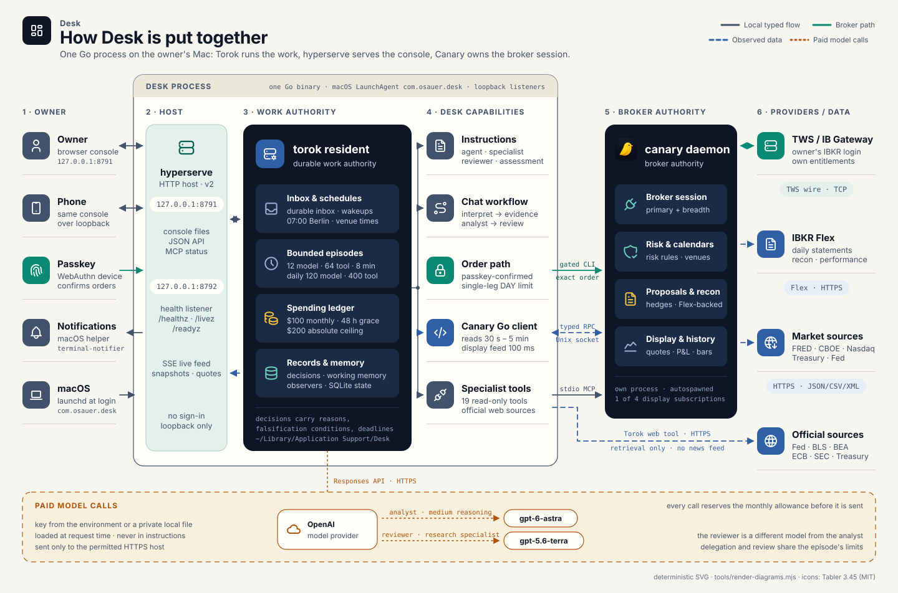
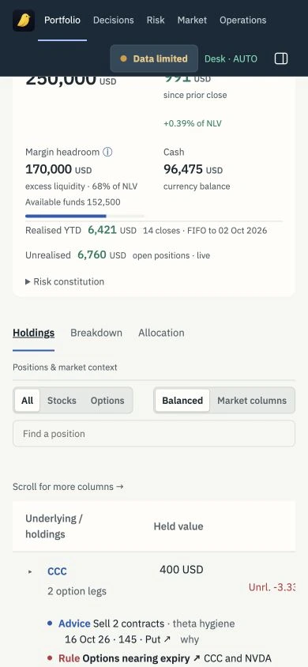
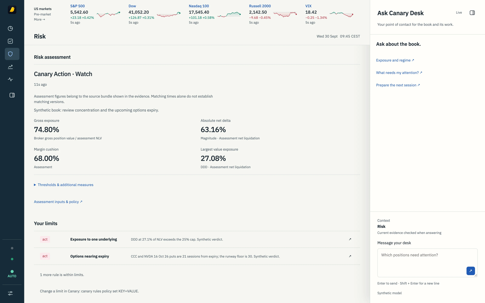
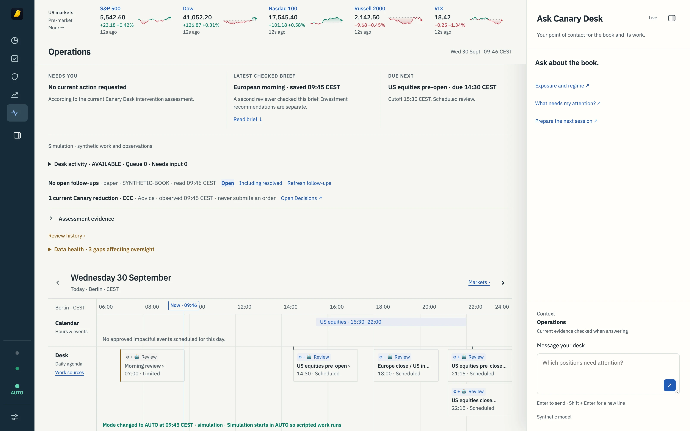

Begin with the full picture
A written brief early each morning and again before the US open: markets and macro, news on the names you hold, how the book performed, where the risk sits. A missing source is named, never papered over.
Private · daily investment workspace
 Canary Desk
Canary Desk
Start each day with your book already reviewed. Canary Desk brings the overnight story, your book's performance, its risks and an AI analyst into one workspace, so you start the day with reviewed decisions instead of open tabs. It runs on Interactive Brokers today, with the broker kept behind one interface so a second platform is an addition rather than a rewrite.
Licensed privately: installed on your own Mac, terms discussed directly, no public download.
A private project by Oliver Sauer, who runs his own book on it every trading day. The screens below are the real console on a simulated book.

From what happened overnight to what you will do about it, with the evidence one click away.
A written brief early each morning and again before the US open: markets and macro, news on the names you hold, how the book performed, where the risk sits. A missing source is named, never papered over.
Holdings, exposure, margin, financing and time-weighted performance against the index, on one screen. Every figure carries its source and its age, so a delayed quote is never mistaken for a live one.
Every proposed add, trim, hold or exit comes with its reason, its sources, what would prove it wrong and an expiry. A second model reviews the analyst before anything reaches you.
Which positions need attention? What changed in the regime? What should tomorrow look like? The analyst gathers the evidence first, keeps the thread, and says so when it lacks what a recommendation would need.
Reviews run before the open, at the open, before the close and after it, on confirmed session times, early closes and holidays included. Operations shows what ran, what is next and what needs you.
Rules draft trailing stops, exits and hedges for every position. You confirm each with a tap, or pre-authorise a reduce-only bucket with a veto window. Everything else waits for you, on the paired companion or a passkey. Research never places a trade.
Start with the open-source foundation on your own machine, or bring its evidence into a daily workflow that is ready before you are.
The broker and market foundation: terminal commands, read-only MCP tools and a paired app. Positions, risk, the daily brief and statement reconciliation from your own Interactive Brokers session, with nothing leaving your machine.
The daily workspace on top of it: written briefings, scheduled reviews, a standing analyst conversation and every decision kept with its evidence. For the trader who wants a desk, not another dashboard.
One Go process on your Mac. Canary owns the broker: session, prices, risk, calendars, protection rules and reconciliation. Torok owns the work: schedules, memory, budgets and recovery after a restart. HyperServe serves the console on your own machine. Canary Desk adds the instructions, the review workflow and the workspace.
Models are kept at arm's length. One writes the brief, a second reviews it, a third does tool-using analysis, each on its own connection with its own budget. No model can reach the broker.

Five views, one set of evidence. Portfolio, Decisions, Risk, Market and Operations read the same clocks, and the analyst follows whatever you are looking at.




If you run your own money, a family office or a small desk and want the morning brief, the reviews and the analyst in one place, get in touch. If you build systems like this, the architecture is worth a conversation too.